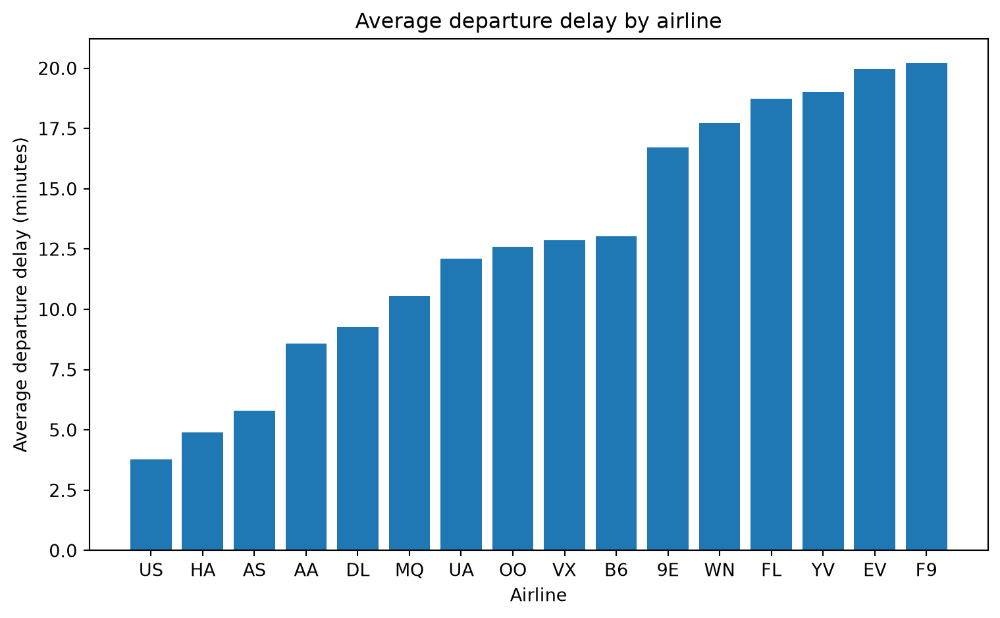

import pandas as pd
import matplotlib.pyplot as plt
from nycflights13 import flightsPython analysis
Flight Delays by Airline
I used the nycflights23 dataset to explore how average departure delays differed between airlines operating flights from New York City airports in 2023.
Data source: The flight data come from the nycflights13 pyython package (Chow, Michael), licensed under CC0. The dataset contains flight information for flights departing from New York City airports.
Average departure delay by airline
First, I grouped the flights by airline and calculated the average departure delay for each carrier. I also counted the number of flights operated by each airline. Missing departure-delay values were excluded from the calculation of the average.
carrier_delays = (
flights
.groupby("carrier")
.agg(
avg_dep_delay=("dep_delay", "mean"),
n_flights=("carrier", "size")
)
.reset_index()
.sort_values("avg_dep_delay", ascending=False)
)
carrier_delays| carrier | avg_dep_delay | n_flights | |
|---|---|---|---|
| 6 | F9 | 20.215543 | 685 |
| 5 | EV | 19.955390 | 54173 |
| 15 | YV | 18.996330 | 601 |
| 7 | FL | 18.726075 | 3260 |
| 14 | WN | 17.711744 | 12275 |
| 0 | 9E | 16.725769 | 18460 |
| 3 | B6 | 13.022522 | 54635 |
| 13 | VX | 12.869421 | 5162 |
| 10 | OO | 12.586207 | 32 |
| 11 | UA | 12.106073 | 58665 |
| 9 | MQ | 10.552041 | 26397 |
| 4 | DL | 9.264505 | 48110 |
| 1 | AA | 8.586016 | 32729 |
| 2 | AS | 5.804775 | 714 |
| 8 | HA | 4.900585 | 342 |
| 12 | US | 3.782418 | 20536 |
The table above shows the average departure delay and the total number of flights for each airline. This allows us to compare both the typical departure delay and the amount of flight data behind each result.
For a clearer comparison, I formatted the results as a table:
carrier_delays.rename(
columns={
"carrier": "Airline",
"avg_dep_delay": "Average departure delay (minutes)",
"n_flights": "Number of flights"
}
).style.format({
"Average departure delay (minutes)": "{:.1f}"
})| Airline | Average departure delay (minutes) | Number of flights | |
|---|---|---|---|
| 6 | F9 | 20.2 | 685 |
| 5 | EV | 20.0 | 54173 |
| 15 | YV | 19.0 | 601 |
| 7 | FL | 18.7 | 3260 |
| 14 | WN | 17.7 | 12275 |
| 0 | 9E | 16.7 | 18460 |
| 3 | B6 | 13.0 | 54635 |
| 13 | VX | 12.9 | 5162 |
| 10 | OO | 12.6 | 32 |
| 11 | UA | 12.1 | 58665 |
| 9 | MQ | 10.6 | 26397 |
| 4 | DL | 9.3 | 48110 |
| 1 | AA | 8.6 | 32729 |
| 2 | AS | 5.8 | 714 |
| 8 | HA | 4.9 | 342 |
| 12 | US | 3.8 | 20536 |
I then visualized the average departure delay for each airline. The airlines are ordered from the lowest to the highest average departure delay.
plot_data = carrier_delays.sort_values("avg_dep_delay")
plt.figure(figsize=(8, 5))
plt.bar(
plot_data["carrier"],
plot_data["avg_dep_delay"]
)
plt.xlabel("Airline")
plt.ylabel("Average departure delay (minutes)")
plt.title("Average departure delay by airline")
plt.tight_layout()
plt.show()
The results show that average departure delays varied across airlines in the 2023 NYC flight data. The visualization makes these differences easier to compare than the table alone. I also included the number of flights for each airline because the average delay should be interpreted in the context of how many flights contributed to the calculation.
Overall, this analysis demonstrates how grouping, summarising, and visualization can be used to investigate patterns in flight delays using Python.